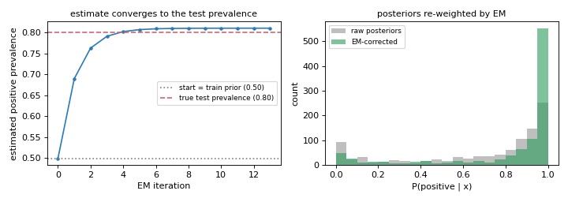

2.5. Likelihood-Based Quantification#
Likelihood-based methods estimate class prevalences by maximising the likelihood of the observed posterior probabilities under the assumption of prior probability shift — the feature distributions within each class do not change, only the class proportions do.
They are among the most accurate single-model quantifiers and should be your first upgrade from the counting family.
2.5.1. Prior Probability Shift — The Core Assumption#
All methods on this page assume:
Under this assumption, the classifier’s posterior probability for a test instance \(x\) is distorted by the wrong priors baked in at training time. Bayes’ theorem tells us how to correct it:
where \(Z\) is a normalisation constant. Likelihood-based methods iterate this correction together with updating \(P_U(y)\) until convergence.
2.5.2. MLPE — Maximum Likelihood Prevalence Estimation (trivial baseline)#
MLPE is the trivial likelihood baseline: it simply returns the
training-set prevalence as the estimate for any test set, assuming no shift.
Why it exists: MLPE provides the lower bound of what a method should achieve. If your quantifier cannot beat MLPE, something is wrong. It is also the starting point of EMQ (see below).
from mlquantify.likelihood import MLPE
from sklearn.linear_model import LogisticRegression
q = MLPE(LogisticRegression())
q.fit(X_train, y_train)
print(q.predict(X_test))
# Returns training prevalence regardless of X_test
2.5.3. EMQ — Expectation-Maximization Quantifier (SLD)#
EMQ (also known as SLD for Saerens–Latinne–Decaestecker) is the
most important single quantifier in mlquantify. It iteratively adjusts
posterior probabilities to find the class prevalences that maximise the
likelihood of the observed test data.
The algorithm has two alternating steps:
E-step — correct each posterior using the current prevalence estimate:
M-step — update the prevalence estimate as the mean of corrected posteriors:
Starting from \(\hat{p}^{(0)} = p_L\) (MLPE), EMQ converges to the maximum-likelihood prevalence estimate. (Saerens et al., 2002; Alexandari et al., 2020)
The plot below shows the two steps in action. A classifier trained on a balanced set is applied to a test set that is 80 % positive: starting from the training prior (0.5), each EM iteration re-weights the posteriors (right) and updates the estimate, which climbs to the true test prevalence (left).
import numpy as np
import matplotlib.pyplot as plt
from sklearn.linear_model import LogisticRegression
from sklearn.datasets import make_classification
rng = np.random.default_rng(0)
X, y = make_classification(n_samples=4000, weights=[0.5, 0.5], random_state=0)
X_tr, X_te, y_tr, y_te = X[:2000], X[2000:], y[:2000], y[2000:]
# resample the test set to be 80% positive (prior probability shift)
pos, neg = np.where(y_te == 1)[0], np.where(y_te == 0)[0]
sel = np.concatenate([rng.choice(pos, 800), rng.choice(neg, 200)])
X_te, y_te = X_te[sel], y_te[sel]
true_prev = float(y_te.mean())
clf = LogisticRegression(max_iter=500).fit(X_tr, y_tr)
post = clf.predict_proba(X_te) # P_L(y | x)
p_L = np.bincount(y_tr, minlength=2) / len(y_tr)
# --- the SLD / EMQ iteration ---
p, history, corrected = p_L.copy(), [p_L[1]], None
for _ in range(40):
r = post * (p / p_L) # E-step
r /= r.sum(axis=1, keepdims=True)
p_new = r.mean(axis=0) # M-step
history.append(p_new[1])
if np.abs(p_new - p).max() < 1e-5:
p, corrected = p_new, r[:, 1]
break
p = p_new
if corrected is None:
corrected = (post * (p / p_L))
corrected = (corrected / corrected.sum(axis=1, keepdims=True))[:, 1]
fig, axes = plt.subplots(1, 2, figsize=(9, 3.2))
axes[0].plot(range(len(history)), history, marker="o", ms=3, color="#2a7ab9")
axes[0].axhline(p_L[1], ls=":", color="gray",
label=f"start = train prior ({p_L[1]:.2f})")
axes[0].axhline(true_prev, ls="--", color="#cc6677",
label=f"true test prevalence ({true_prev:.2f})")
axes[0].set_xlabel("EM iteration")
axes[0].set_ylabel("estimated positive prevalence")
axes[0].set_title("estimate converges to the test prevalence", fontsize=10)
axes[0].legend(fontsize=8)
axes[1].hist(post[:, 1], bins=20, alpha=0.5, color="gray", label="raw posteriors")
axes[1].hist(corrected, bins=20, alpha=0.6, color="#2a9b5c", label="EM-corrected")
axes[1].set_xlabel("P(positive | x)")
axes[1].set_ylabel("count")
axes[1].set_title("posteriors re-weighted by EM", fontsize=10)
axes[1].legend(fontsize=8)
fig.tight_layout()

EMQ iteratively optimises the prevalence to the test set, re-weighting the posteriors along the way.#
Why it excels: EMQ corrects for the exact form of distortion caused by prior probability shift. Esuli et al. (2023) show it is consistently among the top performers across benchmarks when the shift assumption holds.
2.5.3.1. Parameters#
Parameter |
Default |
Explanation |
|---|---|---|
|
|
A probabilistic classifier with |
|
|
Convergence threshold. The algorithm stops when the MAE between
successive prevalence estimates falls below this value. The default
balances speed and accuracy. Reduce to |
|
|
Maximum EM iterations. Almost always converges in < 20 iterations. Raise to 500 if you see convergence warnings. |
|
|
Optional calibration applied to posteriors before the EM loop. Calibration corrects overconfident or underconfident probability outputs, which can significantly improve EMQ accuracy. Options:
|
|
|
What to do if calibration fails (e.g. due to numerical issues).
|
|
|
Convergence criterion comparing successive prevalence estimates. The default MAE is appropriate for all problem types. |
2.5.3.2. Examples#
Basic usage with Logistic Regression (recommended):
from mlquantify.likelihood import EMQ
from sklearn.linear_model import LogisticRegression
from sklearn.datasets import make_classification
from sklearn.model_selection import train_test_split
X, y = make_classification(n_samples=1000, weights=[0.8, 0.2],
random_state=42)
X_train, X_test, y_train, y_test = train_test_split(
X, y, test_size=0.3, random_state=42)
q = EMQ(LogisticRegression())
q.fit(X_train, y_train)
print(q.predict(X_test))
# {0: 0.80, 1: 0.20}
With BCTS calibration (best for neural/overconfident classifiers):
from mlquantify.likelihood import EMQ
from sklearn.neural_network import MLPClassifier
q = EMQ(MLPClassifier(hidden_layer_sizes=(100,), max_iter=500),
calib_function='bcts')
q.fit(X_train, y_train)
print(q.predict(X_test))
Using aggregate directly with pre-computed posteriors:
import numpy as np
from mlquantify.likelihood import EMQ
from sklearn.linear_model import LogisticRegression
# Fit just the classifier
clf = LogisticRegression().fit(X_train, y_train)
proba_train = clf.predict_proba(X_train)
proba_test = clf.predict_proba(X_test)
q = EMQ(clf)
q.fit(X_train, y_train)
# aggregate(test_posteriors, train_posteriors, train_labels)
print(q.aggregate(proba_test, proba_train, y_train))
Multiclass (EMQ is natively multiclass):
from mlquantify.likelihood import EMQ
from sklearn.linear_model import LogisticRegression
from sklearn.datasets import make_classification
X, y = make_classification(n_samples=800, n_classes=4,
n_informative=6, n_redundant=0,
random_state=42)
X_train, X_test = X[:600], X[600:]
y_train, y_test = y[:600], y[600:]
q = EMQ(LogisticRegression())
q.fit(X_train, y_train)
print(q.predict(X_test))
# {0: 0.25, 1: 0.25, 2: 0.25, 3: 0.25}
Tip
EMQ with calib_function='bcts' is the single best-performing method
in Alexandari et al. (2020)’s large benchmark of label-shift methods. Use
it as the primary quantifier when prior probability shift is expected.
When EMQ struggles
EMQ assumes prior probability shift. If the features of a class change
between training and test (concept drift), or if the class-conditional
distributions overlap heavily and the classifier is poorly calibrated,
EMQ’s correction can overshoot. In these cases, distribution-matching
methods like DyS or
KDEyHD may be more robust.
2.5.4. CDE — CDE-Iterate (threshold-adjustment via cost ratios)#
CDE estimates binary class prevalence by iteratively adjusting the
decision threshold using the ratio of misclassification costs derived from
the training priors and the current prevalence estimate.
At each step, the threshold \(\tau\) is set such that a false negative and a false positive have equal expected cost:
where \(c_{FP}\) is updated from the current prevalence estimate. The process repeats until the estimated positive proportion stabilises.
Why it exists: CDE was proposed by Barranquero et al. (2015) as an iterative threshold-selection method that avoids cross-validation entirely. It is lighter than EMQ (no full posterior re-weighting) and often competitive with threshold-adjustment methods on binary problems.
Binary-only — multiclass via OvR.
2.5.4.1. Parameters#
Parameter |
Default |
Explanation |
|---|---|---|
|
|
Probabilistic classifier. |
|
|
Convergence tolerance on the positive prevalence between iterations. |
|
|
Maximum iterations. Typically converges in < 20 steps. |
|
|
Initial false-positive cost. The algorithm starts with equal misclassification costs (\(c_{FP} = c_{FN} = 1\)). Change if you have domain knowledge about the true cost ratio. |
|
|
Multiclass decomposition. |
|
|
Parallel jobs. |
2.5.4.2. Examples#
from mlquantify.likelihood import CDE
from sklearn.linear_model import LogisticRegression
q = CDE(LogisticRegression(), tol=1e-5)
q.fit(X_train, y_train)
print(q.predict(X_test))
# {0: 0.80, 1: 0.20}
Using aggregate with pre-computed posteriors:
clf = LogisticRegression().fit(X_train, y_train)
proba_test = clf.predict_proba(X_test)
q = CDE(clf)
q.fit(X_train, y_train)
print(q.aggregate(proba_test, train_labels=y_train))
2.5.5. Method Comparison#
Method |
Multiclass |
Needs proba |
Extra fit cost |
Best for |
|---|---|---|---|---|
MLPE |
✓ |
✓ |
None |
Baseline; no shift expected. |
EMQ |
✓ |
✓ |
None |
Prior probability shift; recommended default. |
EMQ+BCTS |
✓ |
✓ |
Calibration |
Overconfident classifiers (neural nets, forests). |
CDE |
✗ (OvR) |
✓ |
None |
Binary problems; lightweight alternative to EMQ. |
Practical recommendation:
Use EMQ as your primary quantifier in most scenarios.
Add
calib_function='bcts'when your classifier tends to be overconfident.Use CDE when you want a fast, calibration-free alternative for binary tasks.
Always compare against MLPE to verify your method is actually learning something.
2.5.6. References#
References
Saerens, M., Latinne, P., & Decaestecker, C. (2002). Adjusting the Outputs of a Classifier to New a Priori Probabilities. Neural Computation, 14(1), 21–41.
Alexandari, A., Kundaje, A., & Shrikumar, A. (2020). Maximum Likelihood with Bias-Corrected Calibration is Hard-to-Beat at Label Shift Adaptation. ICML, 222–232.
Barranquero, J., Díez, J., & del Coz, J. J. (2015). Quantification-Oriented Learning Based on Reliable Classifiers. Pattern Recognition, 48(2), 591–604.
See also
Distribution Matching for methods that do not rely on the prior-shift assumption and can handle more general distributional changes.